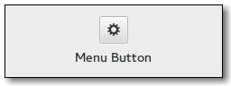

Gtk.MenuButton¶
Example¶

- Subclasses:
None
Methods¶
- Inherited:
Gtk.ToggleButton (10), Gtk.Button (29), Gtk.Bin (1), Gtk.Container (35), Gtk.Widget (278), GObject.Object (37), Gtk.Buildable (10), Gtk.Actionable (5), Gtk.Activatable (6)
- Structs:
Gtk.ContainerClass (5), Gtk.WidgetClass (12), GObject.ObjectClass (5)
class |
|
|
|
|
|
|
|
|
|
|
|
|
|
|
|
|
Virtual Methods¶
Properties¶
- Inherited:
Gtk.ToggleButton (3), Gtk.Button (9), Gtk.Container (3), Gtk.Widget (39), Gtk.Actionable (2), Gtk.Activatable (2)
Name |
Type |
Flags |
Short Description |
|---|---|---|---|
r/w |
The parent widget which the menu should align with. |
||
r/w/en |
The direction the arrow should point. |
||
r/w |
The model from which the popup is made. |
||
r/w |
The popover |
||
r/w |
The dropdown menu. |
||
r/w/en |
Use a popover instead of a menu |
Style Properties¶
- Inherited:
Signals¶
Fields¶
- Inherited:
Gtk.ToggleButton (1), Gtk.Button (6), Gtk.Container (4), Gtk.Widget (69), GObject.Object (1)
Name |
Type |
Access |
Description |
|---|---|---|---|
parent |
r |
Class Details¶
- class Gtk.MenuButton(*args, **kwargs)¶
- Bases:
- Abstract:
No
- Structure:
The
Gtk.MenuButtonwidget is used to display a popup when clicked on. This popup can be provided either as aGtk.Menu, aGtk.Popoveror an abstractGio.MenuModel.The
Gtk.MenuButtonwidget can hold any valid child widget. That is, it can hold almost any other standardGtk.Widget. The most commonly used child isGtk.Image. If no widget is explicitely added to theGtk.MenuButton, aGtk.Imageis automatically created, using an arrow image oriented according toGtk.MenuButton:directionor the generic “open-menu-symbolic” icon if the direction is not set.The positioning of the popup is determined by the
Gtk.MenuButton:directionproperty of the menu button.For menus, the
Gtk.Widget:halignandGtk.Widget:valignproperties of the menu are also taken into account. For example, when the direction isGtk.ArrowType.DOWNand the horizontal alignment isGtk.Align.START, the menu will be positioned below the button, with the starting edge (depending on the text direction) of the menu aligned with the starting edge of the button. If there is not enough space below the button, the menu is popped up above the button instead. If the alignment would move part of the menu offscreen, it is “pushed in”.- Direction = Down
halign = start
halign = center
halign = end
- Direction = Up
halign = start
halign = center
halign = end
- Direction = Left
valign = start
valign = center
valign = end
- Direction = Right
valign = start
valign = center
valign = end
- CSS nodes
Gtk.MenuButtonhas a single CSS node with name button. To differentiate it from a plainGtk.Button, it gets the .popup style class.- classmethod new()[source]¶
- Returns:
The newly created
Gtk.MenuButtonwidget- Return type:
Creates a new
Gtk.MenuButtonwidget with downwards-pointing arrow as the only child. You can replace the child widget with anotherGtk.Widgetshould you wish to.New in version 3.6.
- get_align_widget()[source]¶
- Returns:
a
Gtk.Widgetvalue orNone- Return type:
Gtk.WidgetorNone
Returns the parent
Gtk.Widgetto use to line up with menu.New in version 3.6.
- get_direction()[source]¶
- Returns:
a
Gtk.ArrowTypevalue- Return type:
Returns the direction the popup will be pointing at when popped up.
New in version 3.6.
- get_menu_model()[source]¶
- Returns:
a
Gio.MenuModelorNone- Return type:
Returns the
Gio.MenuModelused to generate the popup.New in version 3.6.
- get_popover()[source]¶
- Returns:
a
Gtk.PopoverorNone- Return type:
Gtk.PopoverorNone
Returns the
Gtk.Popoverthat pops out of the button. If the button is not using aGtk.Popover, this function returnsNone.New in version 3.12.
- get_popup()[source]¶
-
Returns the
Gtk.Menuthat pops out of the button. If the button does not use aGtk.Menu, this function returnsNone.New in version 3.6.
- get_use_popover()[source]¶
- Returns:
Trueif using aGtk.Popover- Return type:
Returns whether a
Gtk.Popoveror aGtk.Menuwill be constructed from the menu model.New in version 3.12.
- set_align_widget(align_widget)[source]¶
- Parameters:
align_widget (
Gtk.WidgetorNone) – aGtk.Widget
Sets the
Gtk.Widgetto use to line the menu with when popped up. Note that the align_widget must contain theGtk.MenuButtonitself.Setting it to
Nonemeans that the menu will be aligned with the button itself.Note that this property is only used with menus currently, and not for popovers.
New in version 3.6.
- set_direction(direction)[source]¶
- Parameters:
direction (
Gtk.ArrowType) – aGtk.ArrowType
Sets the direction in which the popup will be popped up, as well as changing the arrow’s direction. The child will not be changed to an arrow if it was customized.
If the does not fit in the available space in the given direction, GTK+ will its best to keep it inside the screen and fully visible.
If you pass
Gtk.ArrowType.NONEfor a direction, the popup will behave as if you passedGtk.ArrowType.DOWN(although you won’t see any arrows).New in version 3.6.
- set_menu_model(menu_model)[source]¶
- Parameters:
menu_model (
Gio.MenuModelorNone) – aGio.MenuModel, orNoneto unset and disable the button
Sets the
Gio.MenuModelfrom which the popup will be constructed, orNoneto dissociate any existing menu model and disable the button.Depending on the value of
Gtk.MenuButton:use-popover, either aGtk.Menuwill be created withGtk.Menu.new_from_model(), or aGtk.PopoverwithGtk.Popover.new_from_model(). In either case, actions will be connected as documented for these functions.If
Gtk.MenuButton:popuporGtk.MenuButton:popoverare already set, those widgets are dissociated from the self, and those properties are set toNone.New in version 3.6.
- set_popover(popover)[source]¶
- Parameters:
popover (
Gtk.WidgetorNone) – aGtk.Popover, orNoneto unset and disable the button
Sets the
Gtk.Popoverthat will be popped up when the self is clicked, orNoneto dissociate any existing popover and disable the button.If
Gtk.MenuButton:menu-modelorGtk.MenuButton:popupare set, those objects are dissociated from the self, and those properties are set toNone.New in version 3.12.
- set_popup(menu)[source]¶
- Parameters:
menu (
Gtk.WidgetorNone) – aGtk.Menu, orNoneto unset and disable the button
Sets the
Gtk.Menuthat will be popped up when the self is clicked, orNoneto dissociate any existing menu and disable the button.If
Gtk.MenuButton:menu-modelorGtk.MenuButton:popoverare set, those objects are dissociated from the self, and those properties are set toNone.New in version 3.6.
- set_use_popover(use_popover)[source]¶
-
Sets whether to construct a
Gtk.Popoverinstead ofGtk.MenuwhenGtk.MenuButton.set_menu_model() is called. Note that this property is only consulted when a new menu model is set.New in version 3.12.
Property Details¶
- Gtk.MenuButton.props.align_widget¶
- Name:
align-widget- Type:
- Default Value:
- Flags:
The
Gtk.Widgetto use to align the menu with.New in version 3.6.
- Gtk.MenuButton.props.direction¶
- Name:
direction- Type:
- Default Value:
- Flags:
The
Gtk.ArrowTyperepresenting the direction in which the menu or popover will be popped out.New in version 3.6.
- Gtk.MenuButton.props.menu_model¶
- Name:
menu-model- Type:
- Default Value:
- Flags:
The
Gio.MenuModelfrom which the popup will be created. Depending on theGtk.MenuButton:use-popoverproperty, that may be a menu or a popover.See
Gtk.MenuButton.set_menu_model() for the interaction with theGtk.MenuButton:popupproperty.New in version 3.6.
- Gtk.MenuButton.props.popover¶
- Name:
popover- Type:
- Default Value:
- Flags:
The
Gtk.Popoverthat will be popped up when the button is clicked.New in version 3.12.
- Gtk.MenuButton.props.popup¶
-
The
Gtk.Menuthat will be popped up when the button is clicked.New in version 3.6.
- Gtk.MenuButton.props.use_popover¶
- Name:
use-popover- Type:
- Default Value:
- Flags:
Whether to construct a
Gtk.Popoverfrom the menu model, or aGtk.Menu.New in version 3.12.